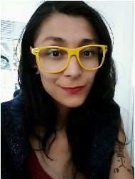

¿Quién Soy?
Joven aprendiz de la vida, profesional en diseño visual, disciplina que me permite explorar y plasmar las diferentes formas de pensar y sentir de mi mundo (intangible), desde mi perspectiva, con un interés especial por las soluciones visuales, armónicas y que refiera a los procesos perceptivos de nuestro contexto sociocultural. Respetuosa y amante de la naturaleza como del universo; en la búsqueda constante de un equilibrio espiritual, mental y físico. Comprometida, dispuesta a aprender y aportar mis conocimientos a su organización.

Contáctame
- Email: karlay.717@gmail.com
- Teléfono:+34658912962
- LinkedIn: /in/carolina-ramírez-marulanda-034b89182
A qué me dedico y Experiencia
Kantar Ibope Media: Digitadora de Televisión, Área AD Intelligence.
Funciones: Realizar piezas gráficas y publicitarias,
Funciones: colectar, trocar, tomar pnt’s de canales cable y telerregionales, de Colombia
y Guatemala, realizar cabezas y réplicas de canales Colombia, Guatemales y Costa Rica. - Febrero 2021
ASOCIACIÓN AMBIENTE Y SOCIEDAD. - Diseñadora Jr.
Funciones: Realizar editados de Guatemala, Costa Rica y Colombia para subir a disco.
para campañas, posters, redes sociales,web, diagramar , brochure digital e impreso, retoque de fotografías, edición de videos y demás
labores en apoyo a la oficina de Prensa y Comunicaciones. -Febrero de 2017 - Julio de 2017.
Mis estudios
| ESTUDIOS | AÑO | CENTRO |
|---|---|---|
| Mercadeo y Publicidad. | 2014 | Universidad Politécnico Grancolombiano -Bogotá. |
| Profesional en Diseño Visual | 2021 | Fundación Universitaria Compensar -Bogotá. |
| Tecnólogo en diseño para proyectos web. | 2019 | Fundación Universitaria Compensar -Bogotá. |
| Técnico profesional y producción de piezas multimedia | 2018 | Fundación Universitaria Compensar -Bogotá. |
| Diplomado en Desarrollo de Campañas de Marketing Digital | 2021 | Fundación Universitaria Compensar -Bogotá. |
| Taller de escritura creativa | 2016 | Idartes (Instituto Distrital de la Artes -Bogotá) |